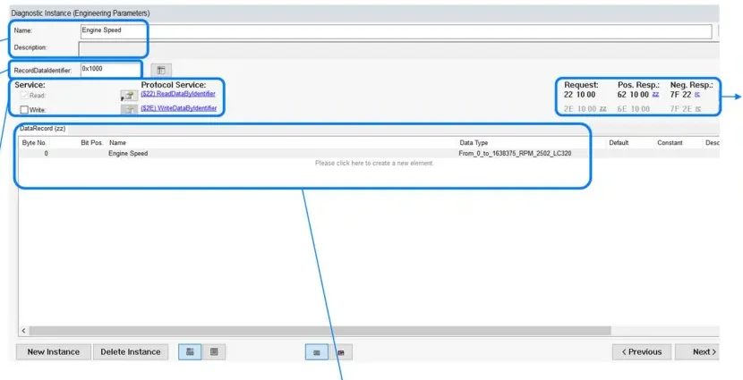
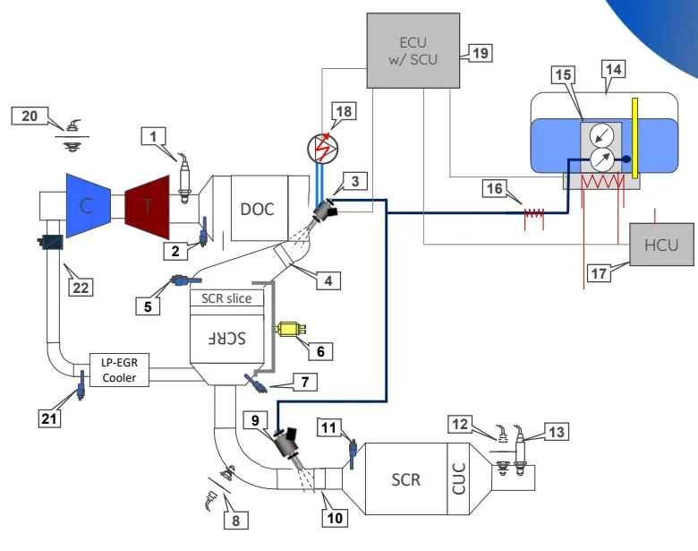
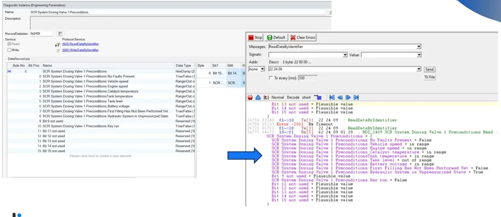

RDI Testing¶
Welcome to your first hands-on diagnostic topic! Every Electronic Control Unit (ECU) in a vehicle holds engineering parameters — sensor readings, internal software states, actuator feedback, learned values — that development, production and aftersales teams all need to inspect from the outside. Tester Data is the family of diagnostic commands that exposes them, and the Readable Diagnostic Identifier (RDI) is the element you will use most often. RDI checks are the simplest diagnostic tests you will run, which makes them the perfect place to start: by the end of this article you will know what a Diagnostic Identifier (DID) is, how to find one in the ECU's diagnostic specification, and how to design and execute an RDI test you can actually trust.
Tester Data exists to:
- check internal software status and read sensor values,
- check actuator status,
- support component learning procedures (pedals, valves, …).
You will rely on these definitions throughout the vehicle's life: at the End of Line (EOL) station in the assembly plant, in aftersales workshops, and during development, fleet and validation activities.
What is a DID?¶
A Diagnostic Identifier (DID) identifies an engineering parameter that is generated by sensors and processed by the electronic system — or calculated internally for control purposes — and that must be available on the diagnostic link. Think of it as a numbered window into the ECU's memory: you ask for a DID by number, the ECU answers with the value behind it.
Two addressing approaches exist:
| Approach | Meaning |
|---|---|
| By Local Identifier | An ID assigned during the development phase. The most common approach in Stellantis ECUs; defines IDs for DIDs, IO Controls and Routine Controls. |
| By Memory Address | The internal memory address where the value is stored. |
Whichever approach is used, the diagnostic specification also defines the conversion formulas, whether an external tool may write the value, and whether security access protects it.
Availability rules¶
A DID is not just a debugging hook — it is a contractual obligation of the ECU. When you test one, these are the guarantees you are verifying:
- Parameters must be readable individually or in groups, on proper request.
- They must be accessible in key ON, with the engine running, and at any vehicle speed.
- If a component is faulty, the DID must report the value actually read by the sensor, not the recovery/substitute value the software is using internally.
- If a parameter does not exist in a given application (variant or
outfitting), the ECU must answer with a negative response meaning
"parameter not available" — Negative Response Code (NRC) 0x31
(
requestOutOfRange) — not crash or stay silent.
RDI vs. WDI¶
DIDs divide by access direction:
| Acronym | Meaning | UDS service |
|---|---|---|
| RDI | Readable Diagnostic Identifier | 0x22 ReadDataByIdentifier |
| WDI | Writeable Diagnostic Identifier | 0x2E WriteDataByIdentifier |
| both | Readable and writeable | 0x22 + 0x2E |
And by origin:
- Mandatory DIDs — required by diagnostic norms such as ISO 14229 (the
standard behind Unified Diagnostic Services, UDS). These are the
identification parameters (ECU identification, software versions, …) and
generally carry identifiers in the
F1xxrange. - Engineering parameters — implemented for a specific ECU in a specific vehicle program. They report sensors, valves, pumps, pedals, ECU features, and so on. Their identifiers come from a range reserved to the customer, specified in the Stellantis diagnostic specification CS.00102.
Reading and writing over UDS¶
RDI testing runs over standard Unified Diagnostic Services (UDS) — the request/response protocol used for nearly all modern ECU diagnostics (see Diagnosis for the full service model). The two exchanges below are worth memorizing; you will see them constantly.
Reading — service 0x22 ReadDataByIdentifier:
Request: 22 XX XX
Positive response: 62 XX XX YY ...
XX XX is the 2-byte RDI identifier; YY ... is the raw value returned by
the ECU, echoing the identifier first.
Writing — service 0x2E WriteDataByIdentifier:
Request: 2E XX XX ZZ ...
Positive response: 6E XX XX
ZZ ... is the value to write; the positive response just confirms the
identifier.
Failure — any negative response has the shape 7F <service> <NRC>, e.g.
7F 22 11 = serviceNotSupported for a read request.
Conversion formulas¶
The bytes returned in a 62 response are raw values. Every diagnostic
requirement carries its own conversion formula to turn them into physical,
readable quantities. Three types are used:
| Type | Use | Definition |
|---|---|---|
| Linear | Raw → physical value | y(x) = m·x + b — m conversion factor, b offset. Min and max (both HEX and DEC) plus unit of measurement must be specified. |
| Table | Discrete states | Each signal state maps to a HEX value (e.g. False = $0, True = $1). A mask gives the maximum representable value for the signal's bit/byte size. |
| Identical | Pass-through | Output the value as HEX or ASCII (part numbers, VIN, …). |
Each conversion formula has its own ID, description and size, so it can be reused across DIDs.
Always convert before judging
A raw 62 24 09 01 20 tells you nothing until you apply the DID's data
type. When a test result looks wrong, first check whether you are
comparing raw hex against a physical expectation — this is the single most
common beginner mistake, and now you know to avoid it.
DIDs in the CDD¶
The CANdela Diagnostic Document (CDD) is the ECU's complete diagnostic specification, authored with CANdelaStudio (Vector). It is your single source of truth for what to test: services, DIDs, data types, sessions and security. Three views matter for RDI work:
- DID Overview — the list of all DIDs across all variants: identifier, description, and whether each is implemented in Common Diagnostics and/or in specific variants.
- DID Implementation — the per-DID detail screen (below): name and
description, the
RecordDataIdentifier(the DID itself, e.g.0x1000), checkboxes enabling read and/or write access, the protocol services ($22/$2E), and the DataRecord table giving byte/bit position, name and data type of each field. The right-hand side shows the exact request, positive and negative response frames; greyed-out entries mean the service is not enabled (e.g. a read-only DID has$2Ein grey). - Properties of Data Type — the conversion formula details. Navigation path: DataRecord → right-click on the conversion formula name → Properties of Data Type.

Testing an RDI¶
Here is the good news: RDI testing is the simplest diagnostic test to realize,
and it runs in the default session (10 01) — no extended session or
security unlock needed. If you can send a request and read a response, you can
do this.
The minimal sequence¶
sequenceDiagram
participant T as Tester (DIAnalyzer)
participant E as ECU
T->>E: 10 01 (default session)
T->>E: 22 XX XX (ReadDataByIdentifier)
alt RDI implemented and readable
E-->>T: 62 XX XX YY ... → TEST OK
else failure
E-->>T: 7F 22 NRC → TEST NOT OK
endA pass means a positive 62 response with the correct identifier echoed and a
plausible value. A 7F negative response fails the test — note the NRC, since
it tells you why (0x11 service not supported, 0x31 request out of range,
0x22 conditions not correct, …).
One reading is not enough¶
This is the pitfall that separates a checkbox test from a real one. A single positive answer proves the service exists — nothing more. The value could be a frozen constant: a software bug, a stuck variable or a broken scaling can all return a perfectly formatted but dead value. To say the test is OK, you need at least three readings proving the RDI tracks the internal variable:
flowchart TD
A["Read RDI → current value"] --> B["Force internal SW variable<br/>to MINIMUM of range"]
B --> C["Read RDI → follows to min?"]
C -->|no| F["TEST NOT OK<br/>(RDI blocked / wrong mapping)"]
C -->|yes| D["Force internal SW variable<br/>to MAXIMUM of range"]
D --> E["Read RDI → follows to max?"]
E -->|no| F
E -->|yes| G["TEST OK"]You force the internal variable with the development/debug tool chain for the
ECU under test, and read the RDI over UDS. If the diagnostic value follows the
forced minimum and maximum (within the conversion formula's tolerance), the
whole chain — sensor/software variable → diagnostic buffer → $22 response →
conversion — is working, and you can report the test as passed with
confidence.
Compare like with like
Apply the DID's conversion formula to the raw response before comparing against the forced value, and respect the valid range defined in the CDD. Forcing the variable outside its specified min/max is not a valid test step.
Worked example: SCR dosing valve preconditions¶
Let's put it all together with a realistic RDI test request, as seen on a Stellantis diesel program:
- ECU: ECM (Engine Control Module)
- Sub-system: SCR (Selective Catalytic Reduction) aftertreatment — the system that injects a urea solution into the exhaust to cut NOx emissions
- Issue: every component of the SCR system must be tested at EOL to verify it works properly
- Customer request: implement DIDs that report whether all enable conditions for testing each SCR component are met at EOL — focus component: the Urea Dosing Valve (item 9 below)

The ECU supplier answered with a multi-bit DID, 0x2409 — "SCR System
Dosing Valve 1 Preconditions", where each bit of the DataRecord reports one
enable condition:
| Bit | Condition | Data type |
|---|---|---|
| 0 | No faults present | True/False |
| 1 | Vehicle speed | in range / out of range |
| 2 | Engine speed | in range / out of range |
| 3 | Catalyst temperature | in range / out of range |
| 4 | Tank temperature | in range / out of range |
| 5 | Tank level | in range / out of range |
| 6 | Battery voltage | in range / out of range |
| 7 | First filling has not been performed yet | True/False |
| 8 | Hydraulic system in unpressurized state | True/False |
| 10 | Key run | True/False |
| 9, 11–15 | not used | reserved |
Execution in DIAnalyzer¶
The CDD is loaded into DIAnalyzer (the diagnostic test tool), which knows the DID's layout and conversions. The execution shows the raw exchange and the decoded result side by side:

Reading the trace:
- The tester sends
22 24 09(ReadDataByIdentifier on DID0x2409). - The ECU answers
62 24 09 01 20— a positive response with two data bytes. - DIAnalyzer decodes the bytes through the CDD data type: vehicle speed in range, engine speed in range, catalyst temperature in range, tank temperature in range, tank level out of range, battery voltage in range, key run = False, and so on.
The decoded view is exactly what the EOL operator needs: in this snapshot the dosing valve test cannot run because the tank level is out of range (and key run reads False) — the other preconditions are green.
Why preconditions as a DID?
Packing enable conditions into one bitmask DID lets the EOL test sequence
check everything with a single $22 request instead of a dozen separate
reads — and gives an immediate, decoded reason when a component test is
not allowed to start.
Where to go next¶
Practice these concepts in the RDI testing exercises: UDS request/response analysis, diagnostic exercises on real ECU specs, and missing-message detection. The tools used here are covered in Diagnostic Tools.
Key takeaways
- A DID is a numbered window into an ECU's engineering parameters; RDI
= readable (service
$22), WDI = writeable (service$2E). - DIDs must be readable at key ON, engine running, any vehicle speed; on sensor faults they report the real sensor value; missing parameters get NRC 0x31.
- Mandatory identification DIDs live in the
F1xxrange (ISO 14229); engineering parameters use customer ranges (CS.00102). - Raw responses become physical values through linear (
y = m·x + b), table or identical conversion formulas — check them under Properties of Data Type in the CDD. - Never trust a single reading: a passing RDI test needs at least three — current value, forced minimum, forced maximum.
- You've got this: if you can send
22 XX XXand decode the62reply, you already hold the core skill of diagnostic testing.
Sub-sections¶
Source material¶
This article was distilled from the academy lesson materials:
- RDI Testing — PDF, 1.8 MB